IEEE Transactions on Visualization and Computer Graphics (TVCG), Vol. 32, No. 7, July 2026
1School of Computer Science, Peking University
2National Key Laboratory of Intelligent Parallel Technology
†Corresponding author
Real-time scene navigation and live editing of objects, materials and lights, captured directly from our application.
Cannot see the player? Watch the video on Bilibili ↗
We present a real-time pipeline to approximate global illumination in interactive or dynamic scenes, including both 3D Gaussian models and conventional meshes. Building on a formulated surface light transport model for 3D Gaussians, we address key performance challenges through a fast compound stochastic ray-tracing algorithm and a hardware 3D Gaussian rasterizer, and we implement multiple RTGI (real-time global illumination) techniques for 3D Gaussians. Our pipeline enables real-time rendering of interactive scenes featuring editable materials, lights, meshes, and 3D Gaussian models, effectively capturing multi-bounce diffuse and one-bounce glossy light transport. Our approach covers a wide range of dynamic light sources, including area lights, directional lights, and environmental lighting. Comprehensive experimental results demonstrate that our approach can efficiently render global illumination for both 3DGS models and hybrid models combining meshes and 3DGS, all in real time. Our pipeline highlights the potential of 3D Gaussians in real-time global illumination, and offers insights into performance optimization.
Real-time global illumination needs two things: a way to describe how light travels between 3D Gaussians, and a way to compute it cheaply, every frame. We contribute both — a simple light-transport model for 3D Gaussians, and fast ray-tracing / rasterization building blocks that make it practical.
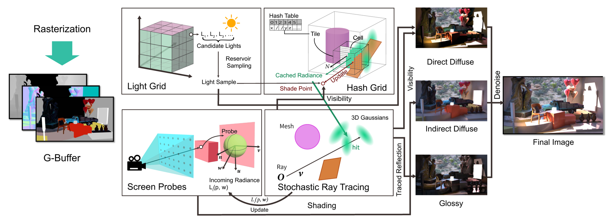
Along a ray, we treat every Gaussian as a tiny semi-transparent surface and blend their light front-to-back — exactly the way 3DGS rasterization blends colors. This gives a light-transport equation that is cheap enough for real time and works directly with models from existing 3DGS inverse renderers.
Testing every Gaussian a ray touches is too slow, so we flip a weighted coin at each hit instead: opaque Gaussians are likely to block the ray, transparent ones to let it through. The result is noisy but correct on average, and much faster — the pipeline's filters take care of the noise. Rays also try a cheap screen-space walk first before falling back to full tracing.
Every Gaussian is turned into a small hexagon and drawn by the GPU's hardware rasterizer instead of a custom CUDA kernel. Hardware interpolation of per-vertex depths yields smooth surfaces and clean normals, fast enough to rebuild a full G-buffer every frame.
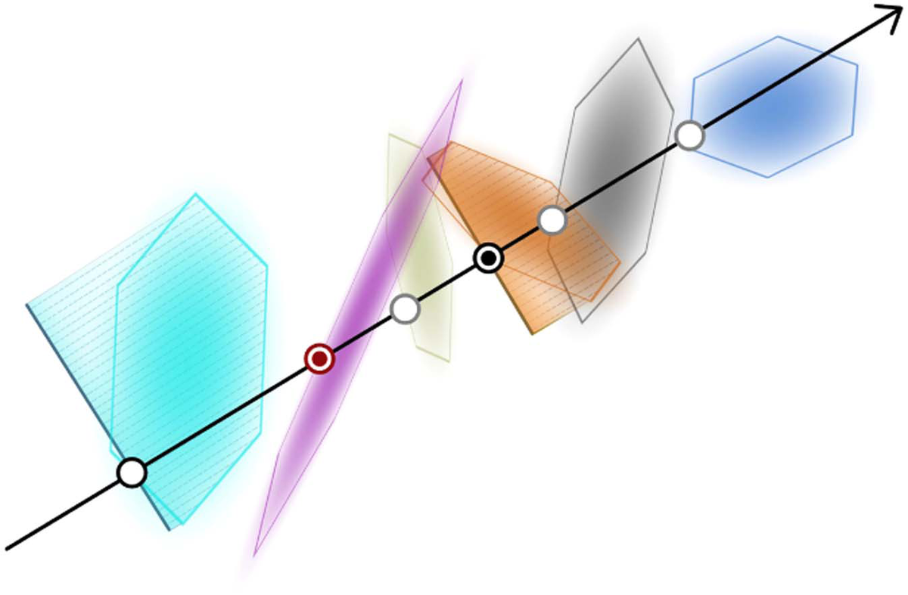
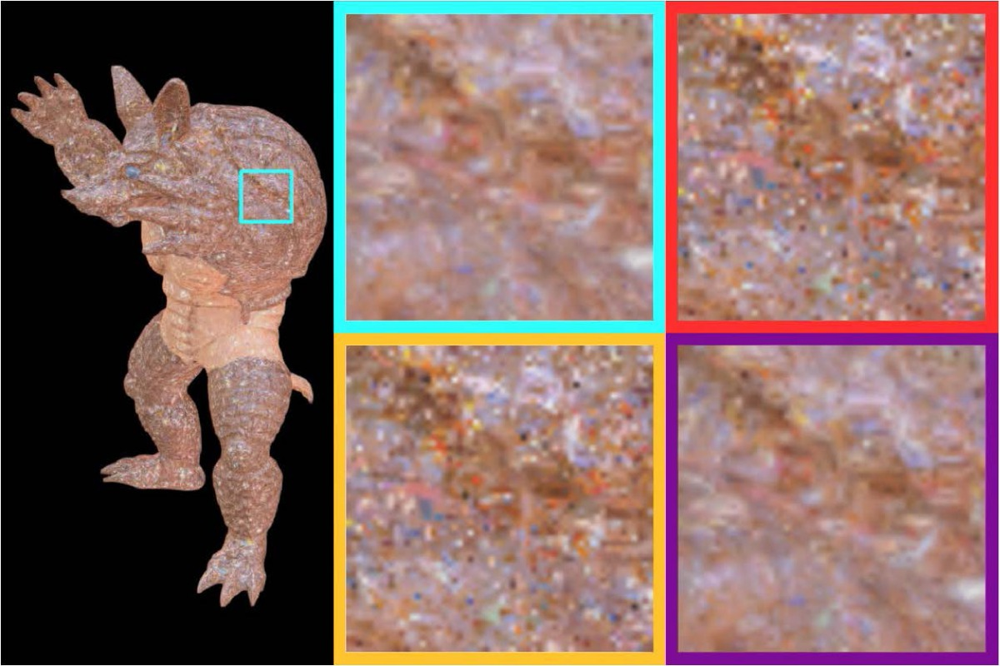
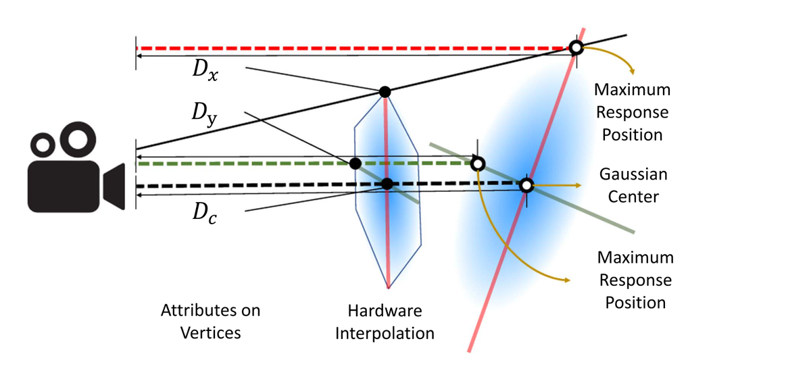
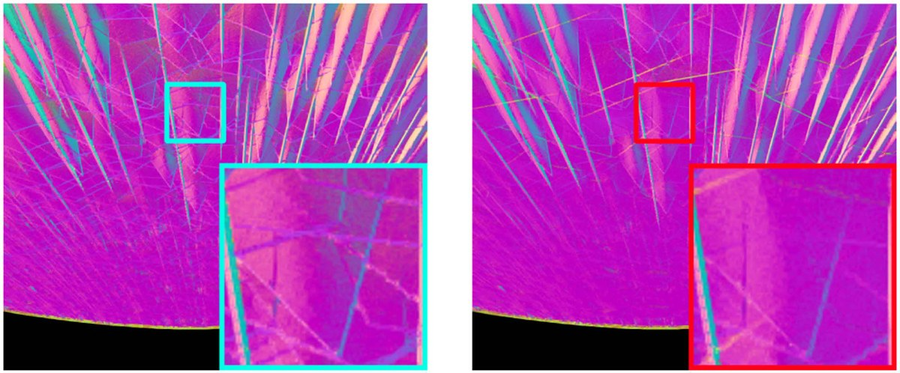
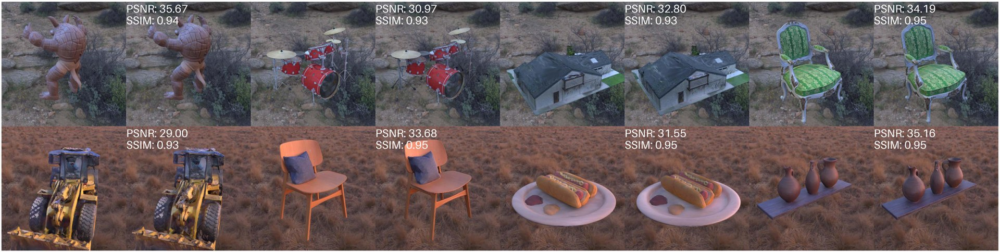
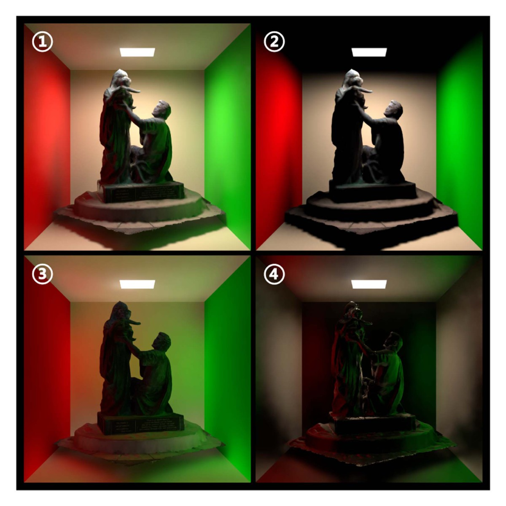
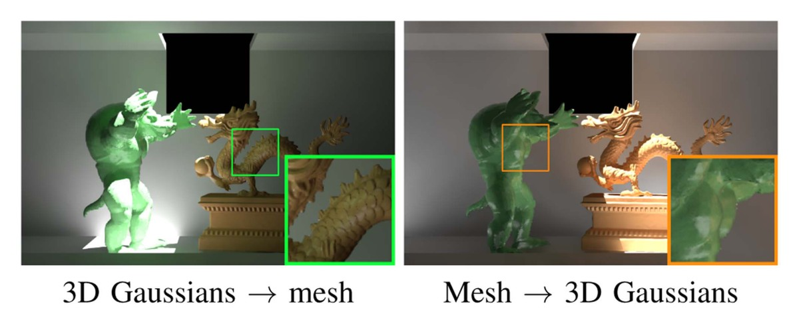
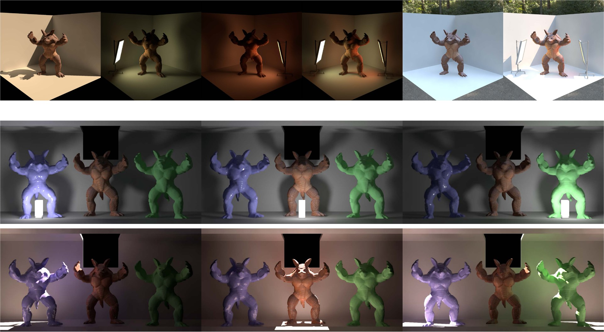
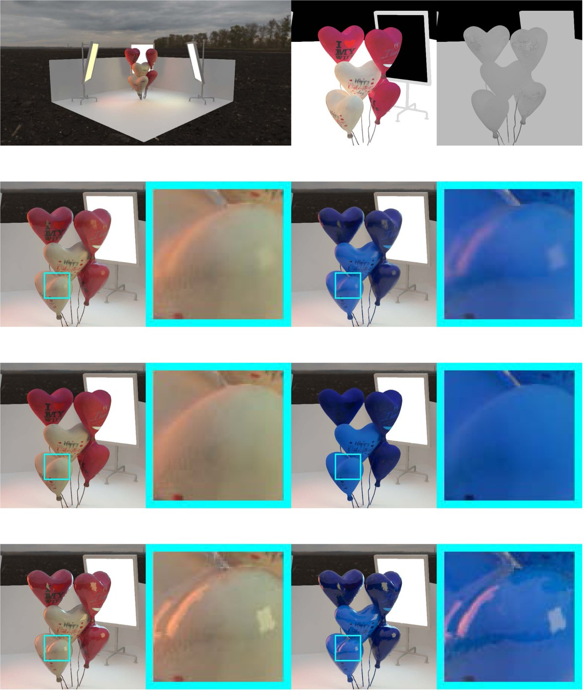
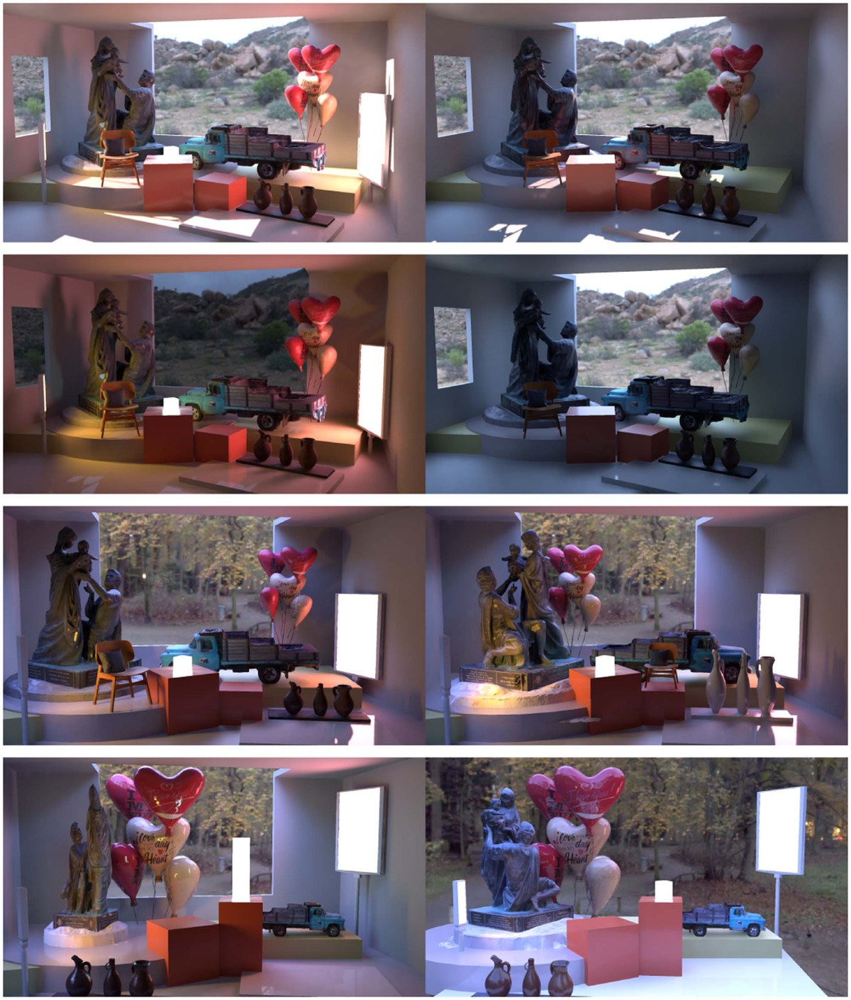
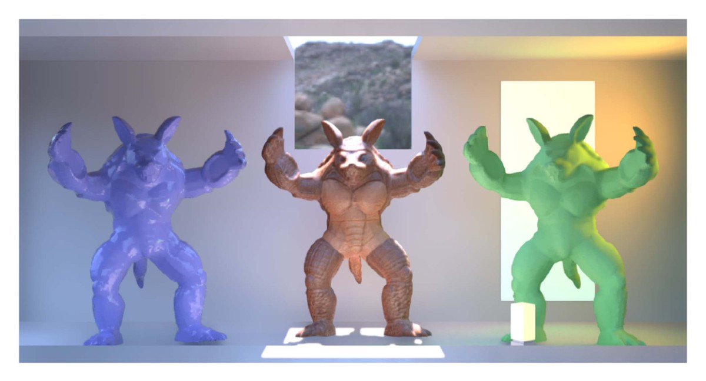
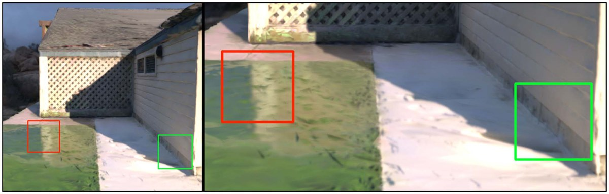
Measured on the teaser scene (1.57M Gaussian primitives in the view frustum) at 1920×1088 on an RTX 3090: 43 FPS on average. Gaussian rasterization — scaling linearly with total fragment byte size — is the main bottleneck, while stochastic ray tracing scales sub-linearly with model size and remains a minor cost.
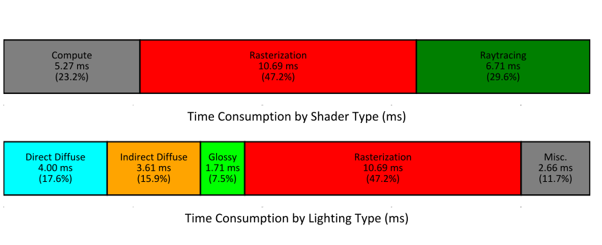
| bonsai | garden | drjohnson | |
|---|---|---|---|
| 3DGS (Kerbl et al.) | 4.02 | 11.74 | 9.31 |
| FlashGS | 1.48 | 4.05 | 1.77 |
| Ours | 2.21 | 6.96 | 2.88 |
Our hardware rasterizer sits between the original CUDA software rasterizer and the heavily optimized FlashGS. Comparison is for reference only due to non-equivalent implementations.
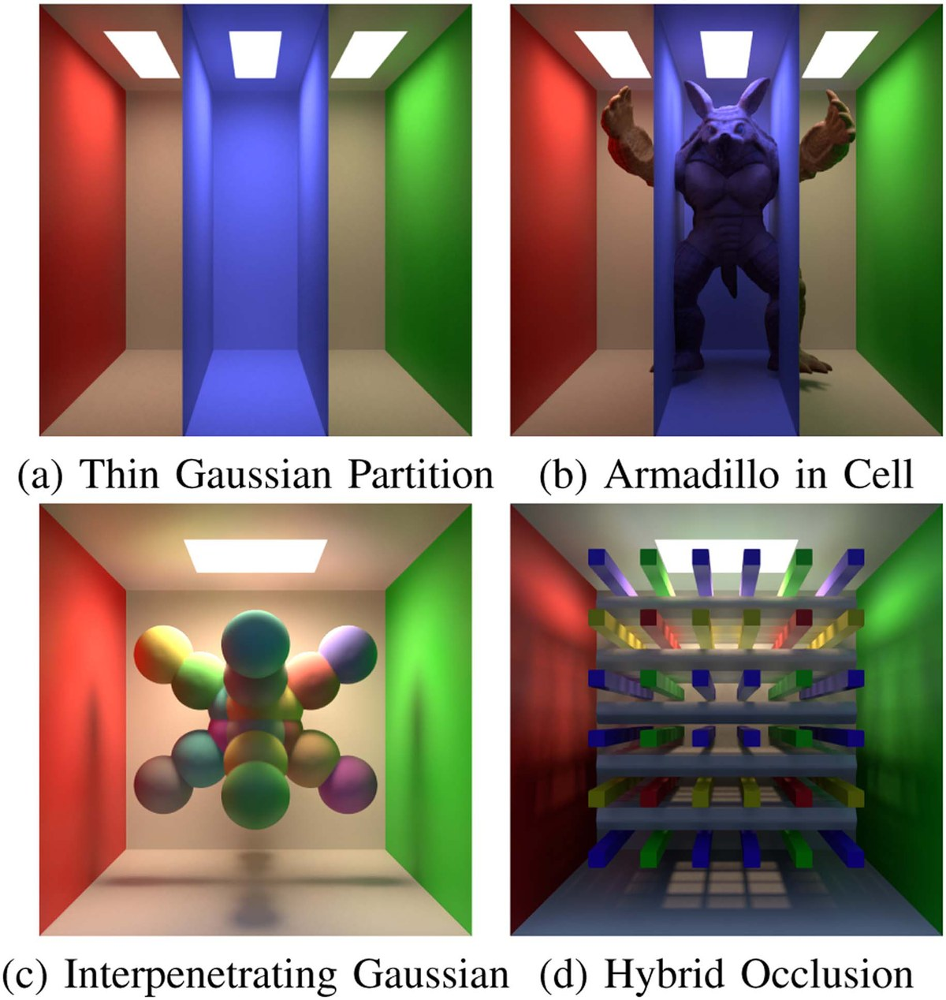
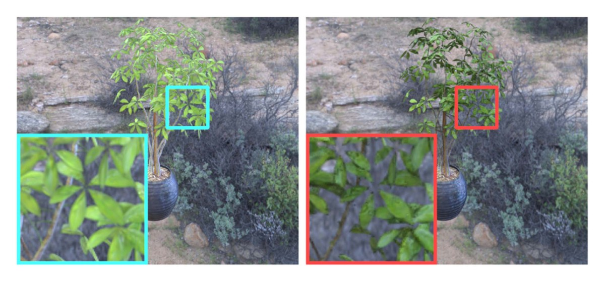
@article{hu2026dynamic,
author = {Hu, Chenxiao and Gai, Meng and Wang, Guoping and Li, Sheng},
title = {Dynamic Global Illumination for Interactive Gaussian Splatting Scenes in Real Time},
journal = {IEEE Transactions on Visualization and Computer Graphics},
year = {2026},
volume = {32},
number = {7},
pages = {6919--6931},
doi = {10.1109/TVCG.2026.3689199}
}